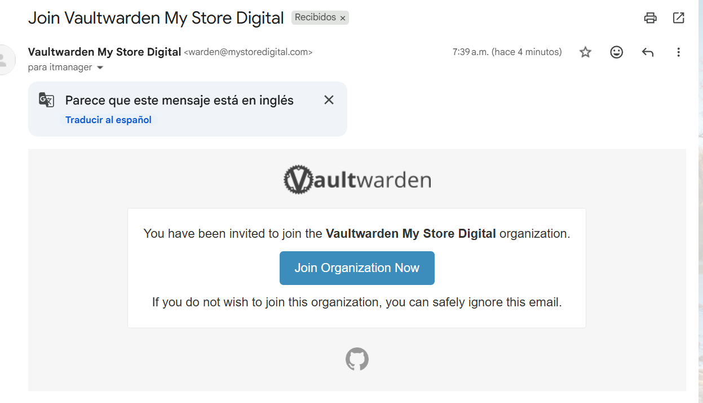
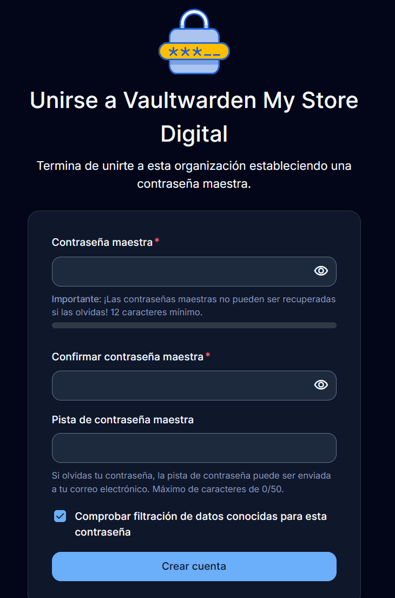
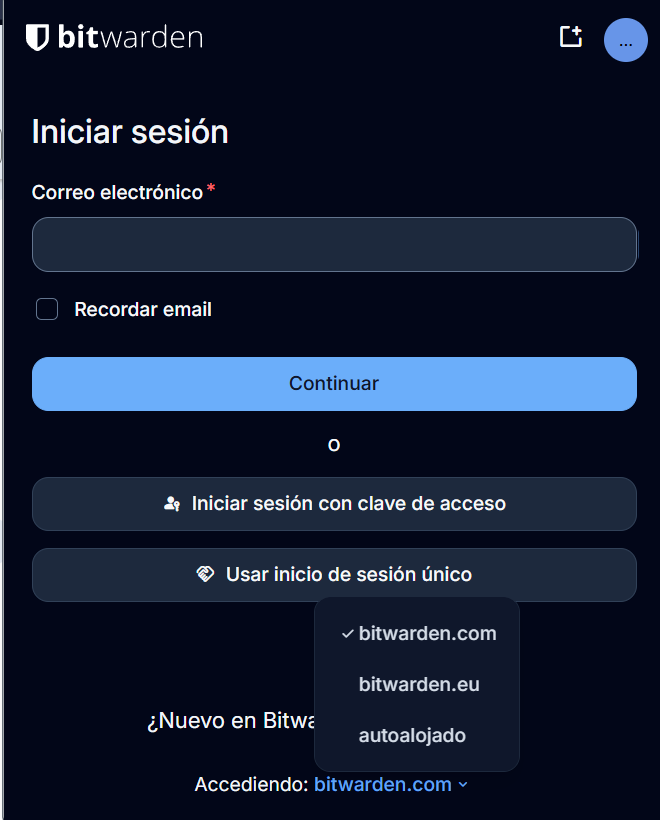
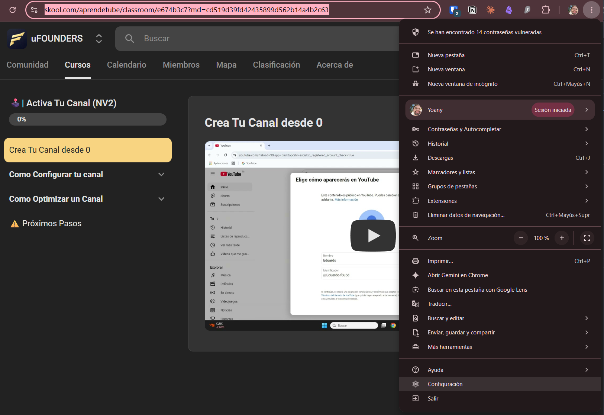
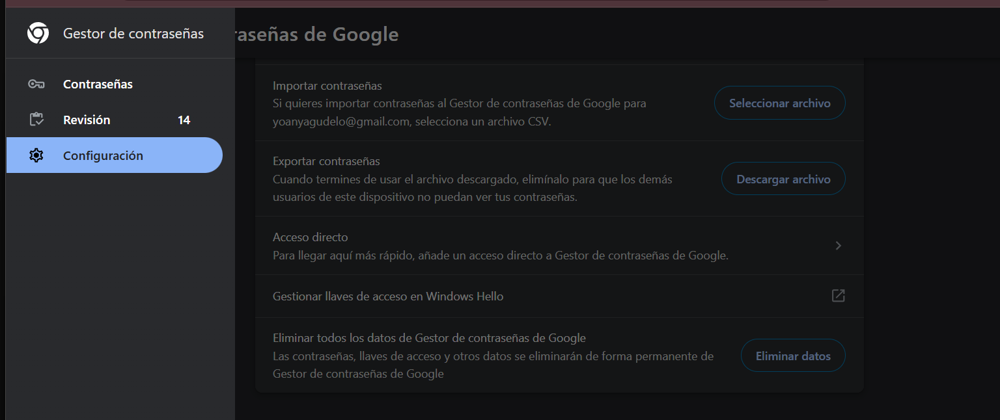
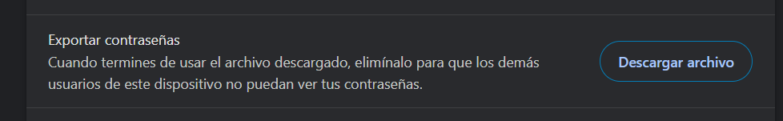
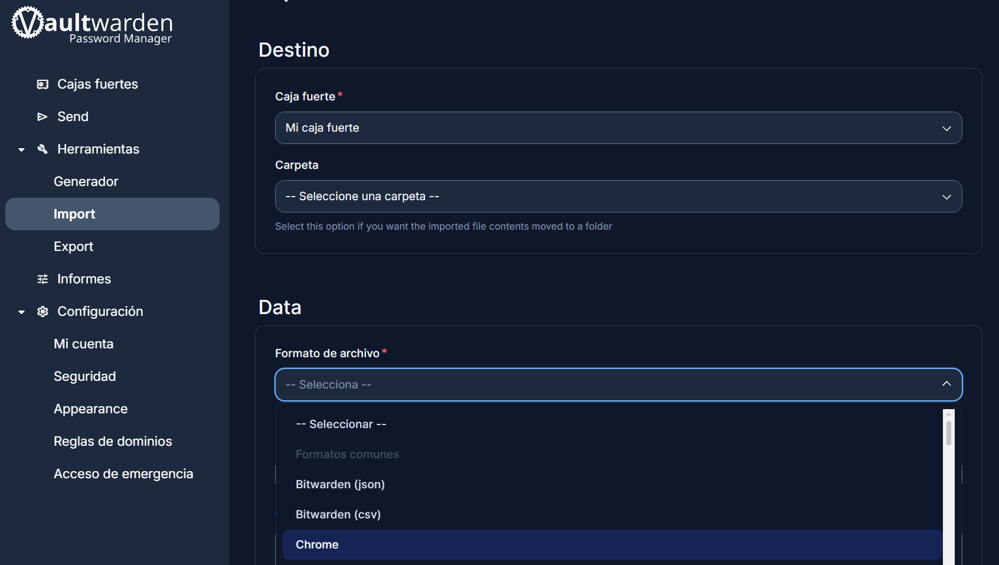

Qué vas a hacer: unirte al Bitwarden del equipo, crear tu contraseña maestra, importar las contraseñas que hoy guarda tu navegador y activar el doble factor.
Tiempo estimado: 15 minutos.
Lo único que debes memorizar: tu contraseña maestra. Todo lo demás lo recuerda Bitwarden por ti.
- Servidor
https://warden.mystoredigital.com- Correo de invitación
- Vaultwarden My Store Digital <warden@mystoredigital.com>
- Tipo de cuenta
- Autoalojado (NO bitwarden.com)
- Doble factor
- Obligatorio al final de esta guía
Paso 1 — Acepta la invitación
Te llegó (o te llegará) un correo de Vaultwarden My Store Digital con el asunto "Join Vaultwarden My Store Digital". Si no lo ves en la bandeja de entrada, revisa Spam.
- Abre el correo y haz clic en el botón azul Join Organization Now.
- Se abre una página titulada "Unirse a Vaultwarden My Store Digital" donde te pide crear tu contraseña maestra.
- Antes de escribir nada, lee el paso siguiente de esta guía — la contraseña maestra es la decisión más importante de todo el proceso.

Paso 2 — Crea tu contraseña maestra

Requisitos:
- Mínimo 12 caracteres (más es mejor).
- Combina mayúsculas, minúsculas, números y símbolos (
$ * # ! %…). - Fácil de recordar para ti, difícil de adivinar para los demás.
El truco: toma una palabra o frase que signifique algo para ti (que nadie asociaría contigo), y decórala con símbolos y números. Ejemplos del patrón:
| Ejemplo | Por qué funciona |
|---|---|
Abundancia$$2026* | Palabra con significado personal + símbolos + año + símbolo final. 17 caracteres, fácil de recitar mentalmente. |
CafeSinAzucar#77! | Frase cotidiana pegada + símbolo + número que solo tú conoces. |
MiFinca*Verde2026# | Dos palabras con mayúscula + símbolos intercalados + año. |
123456.- Escribe tu contraseña maestra en los dos campos (contraseña y confirmación).
- Opcional: escribe una pista (máx. 50 caracteres) que te ayude a recordarla a ti — pero que no revele la contraseña. Ejemplo: para
Abundancia$$2026*, una pista válida sería "mi palabra del año + decoración". - Deja marcada la casilla "Comprobar filtración de datos conocidas".
- Haz clic en Crear cuenta e inicia sesión.
Muy importante: el servidor es "autoalojado"
Cuando instales la extensión del navegador o la app del celular, la pantalla de inicio de sesión de Bitwarden apunta por defecto a bitwarden.com. Ahí tu cuenta no existe — vive en nuestro servidor.
- En la pantalla de inicio de sesión, baja hasta el final, donde dice "Accediendo: bitwarden.com".
- Haz clic y en el menú elige autoalojado.
- En "URL del servidor" escribe:
https://warden.mystoredigital.com - Guarda y ya puedes ingresar con tu correo y tu contraseña maestra.

bitwarden.com en vez de al servidor autoalojado.Paso 3 — Exporta las contraseñas de tu navegador
Ahora vas a sacar las contraseñas que Chrome guarda hoy, para meterlas a tu caja fuerte. (Si usas Edge o Brave el camino es casi idéntico.)
- En Chrome, haz clic en el menú ⋮ (arriba a la derecha) → Contraseñas y Autocompletar → Gestor de contraseñas de Google.
- En el panel izquierdo entra al menú Configuración — este es el paso que la gente se salta: la exportación NO está en la lista de contraseñas, está en Configuración.
- Busca "Exportar contraseñas" y haz clic en Descargar archivo.
- Chrome te pedirá confirmar con tu clave de Windows o PIN, y descargará un archivo
Contraseñas de Chrome.csv.



Paso 4 — Importa las contraseñas a tu caja fuerte
- Entra a
https://warden.mystoredigital.come inicia sesión. - En el menú izquierdo ve a Herramientas → Import.
- En Destino, deja "Caja fuerte" en Mi caja fuerte.
- En Formato de archivo, selecciona Chrome (está bajo "Formatos comunes").
- Selecciona el archivo CSV que descargaste y confirma la importación.
- Verifica en Cajas fuertes que tus contraseñas aparecen.
- Elimina el archivo CSV de tu carpeta de Descargas y de la papelera.

Paso 5 — Activa el doble factor (2FA)
El doble factor protege tu caja fuerte aunque alguien llegue a conocer tu contraseña maestra. Es el candado final y es obligatorio para el equipo.
- Instala en tu celular una app de autenticación si no tienes una: Google Authenticator, Microsoft Authenticator o 2FAS.
- En la web de Vaultwarden, ve a Configuración → Seguridad y abre la pestaña Autenticación en dos pasos.
- En la opción "Aplicación de autenticación" haz clic en Administrar (te pedirá tu contraseña maestra).
- Escanea el código QR con la app de tu celular.
- Escribe el código de 6 dígitos que muestra la app y confirma.
- Guarda el código de recuperación que te muestra Bitwarden — anótalo en papel y guárdalo en un lugar seguro. Es tu salvavidas si pierdes el celular.
Preguntas frecuentes
¿Qué pasa si olvido mi contraseña maestra?
No hay recuperación por correo como en otros servicios: nadie —ni el administrador— puede verla ni restablecerla. Puedes pedir que te envíen la pista que configuraste desde la pantalla de inicio de sesión. Si aun así no la recuerdas, avisa al administrador para eliminar tu cuenta e invitarte de nuevo, y perderás lo que tuvieras guardado en tu caja fuerte personal.
¿Puedo usarlo en el celular y en el navegador?
Sí, y es lo recomendado. Instala la app Bitwarden (App Store / Play Store) y la extensión Bitwarden en tu navegador. En ambas, antes de iniciar sesión, recuerda cambiar la región a autoalojado con el servidor https://warden.mystoredigital.com.
¿Cuál es la diferencia entre "Mi caja fuerte" y la organización?
Mi caja fuerte es tu espacio personal: solo tú ves lo que hay ahí. La organización Vaultwarden My Store Digital es el espacio compartido del equipo: ahí viven los accesos comunes, organizados en colecciones según tu rol. Cuando guardes un acceso nuevo, fíjate en cuál de los dos lo estás creando.
¿Uso Edge, Brave u otro navegador — cambia algo?
El flujo es el mismo: exportar a CSV desde la configuración de contraseñas del navegador, e importar en Vaultwarden eligiendo el formato correspondiente en Herramientas → Import (hay opciones para Chrome, Edge, Firefox, Opera, Safari y más). Brave usa el mismo formato de Chrome.